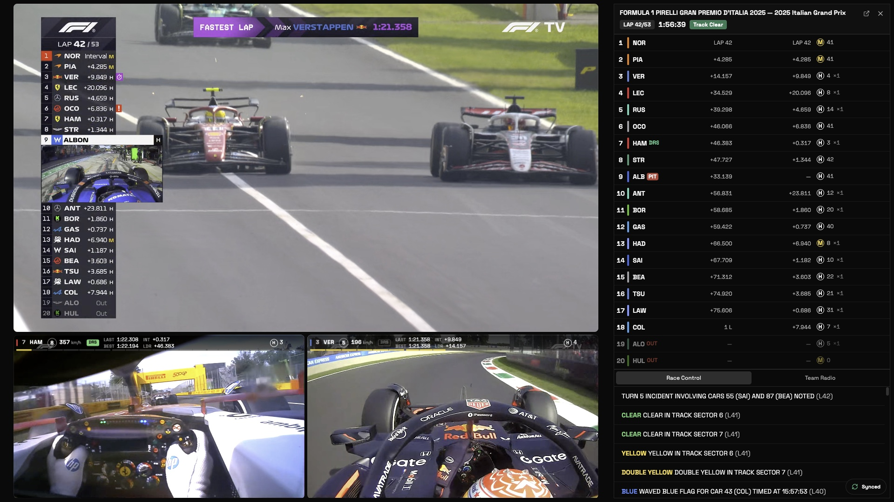

Your race.
Every angle.
F1 TV multiview, made yours. OpenViewer brings the main feed, your favourite onboards and live timing together.
Free and open source for Windows and macOS.
A valid F1 TV subscription is required for video.

Make room
for your race.
| P | Driver | Gap | Interval | Tyre |
|---|
All the action.
Your arrangement.
An F1 multiview app for Windows and macOS, built around the way you follow a race.
Auto layout follows the window, with Live Timing and the driver HUD.
Click to pause. Double-click to enlarge.Every feed.
One moment.
F1 live timing, onboards and the main feed. In sync.
Live Timing keeps standings, sector times, tyre stints, Race Control and team radio synchronized with the video, during live sessions and replays.
If the main feed rebuffers, the other videos wait. Live and replay timing stay with the action.
Inside Live TimingF1 multiview.
Start here.
Set up multiple F1 TV streams, choose your onboards and bring Live Timing alongside the race. Our guide walks through your first layout on Windows or Mac.
Read the F1 TV multiview guideBefore
lights out.
How do I watch multiple F1 cameras at once?
Open a session in OpenViewer, choose the main feed and the onboard cameras you want, then use auto layout or arrange the panels yourself. See the F1 TV multiview setup guide for the full walkthrough.
Do I need an F1 TV subscription?
Yes. Video playback requires your own active F1 TV Pro or Premium subscription. F1 TV’s regional restrictions and entitlement checks still apply.
Does F1 TV multiview work on Windows and Mac?
Windows and macOS are supported. The Mac download is for Apple Silicon. The download buttons check the latest published release on GitHub; see the release page for every available build.
Does Live Timing stay in sync with the video?
Yes. Live Timing stays synchronized with the video during live sessions and replays, so standings, gaps, tyre stints, Race Control and team radio follow the action you are watching.
Is OpenViewer free?
The app is free and open source under the MIT licence, with no ads or telemetry. Your F1 TV video subscription is separate. Live Timing uses a public archive and does not require F1 TV login.
Your next race
starts here.
Your F1 TV. Your desktop. Your pit wall.
View downloadsLatest release on GitHub All releases
A valid F1 TV Pro or Premium subscription is required for video.